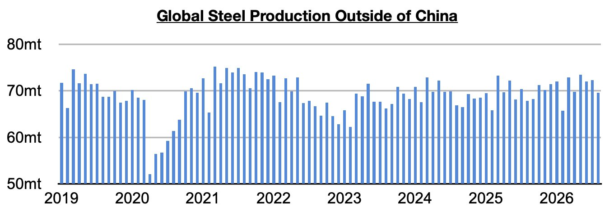
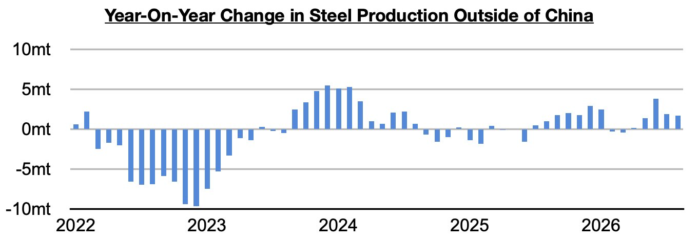
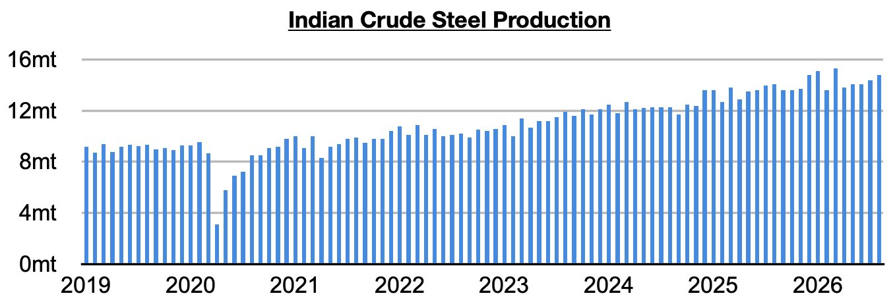
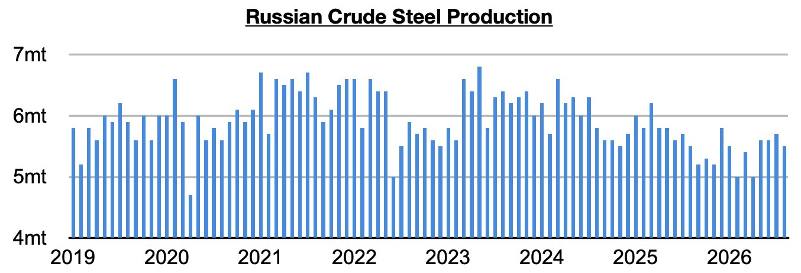
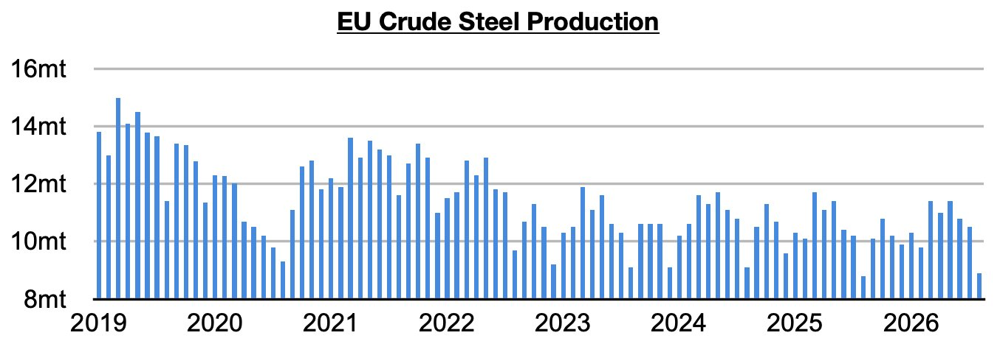
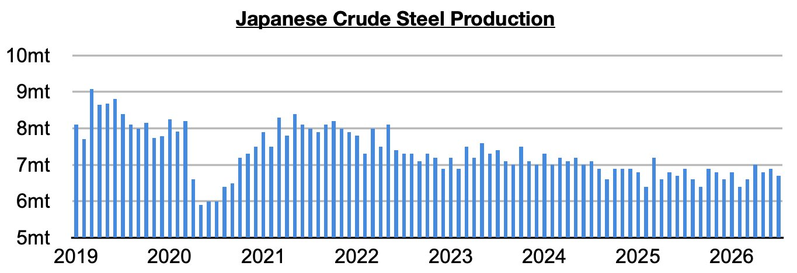
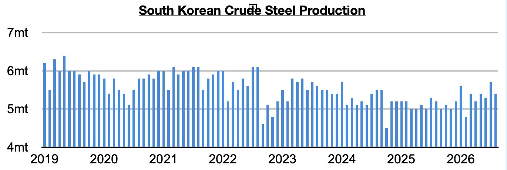

As we discussed in Commodore Research's most recent Weekly Executive Report, global steel production totaled approximately 144.2 million tons in August. This is down month-on-month by 5 million tons (-3%) and down year-on-year by 1.1 million tons (-1%). Steel production ex-China totaled approximately 69.6 million tons. This is down month-on-month by 2.7 million tons (-4%) but up year-on-year by 1.7 million tons (3%).

Steel production ex-China has now increased on a year-on-year basis for five straight months. Previously, it had contracted on a year-on-year basis for two straight months. China’s steel output remains in a contraction however.

Taking India out of the equation, production grew year-on-year by 1 million tons (2%). Steel output ex-China/India has now grown on a year-on-year basis for four straight months.
Indian steel output totaled 14.8 million tons. This is up month-on-month by 400,000 tons (3%) and is up year-on-year by 700,000 tons (5%). Production has now grown on a year-on-year basis for forty-two straight months.

Russian output totaled 5.5 million tons. This is down month-on-month by 200,000 tons (-4%) and is again unchanged year-on-year. Before the last three months, output contracted on a year-on-year basis in twenty of the prior twenty-two months.

EU steel output totaled 8.9 million tons. This is down month-on-month by 1.6 million tons (-15%) but up year-on-year by 100,000 tons (1%). Production has now increased on a year-on-year basis for three straight months.

Japanese steel output totaled 6.7 million tons. This is down month-on-month by 200,000 tons (-3%) but is up year-on-year by 100,000 tons (2%). Japan’s steel production has now increased on a year-on-year basis during three of the last five months.

South Korean steel output totaled 5.4 million tons. This is down month-on-month by 300,000 tons (-5%) but up year-on-year by 200,000 tons (4%). South Korean steel output has now increased on a year-on-year basis during seven of the last eight months.
